Visual reference for the finalized custom-delivery tiering (Option A bullseye rings at 0–1 / 1–5 / 5–20 mi), plus Option B single-zone comparisons, a hotel-POI carve-out, incremental multi-home allocation, and a country-clipping demo at El Paso (§5.4). Each row shows how the zones were generated (left), the rendered polygons over a real map (right), and per-zone H3 cell counts at the three compaction levels airports-msvc actually uses.
One res-9 H3 tile centered on a hotel near LAX. This is the canonical mapping for hotels and train stations per §4 of the design doc — the zone owns exactly one tile, and any per-vehicle differences in fee / free-delivery / key-handoff become separate DeliveryZoneSettings rows under that single zone.
| Zone | res-9 | edge-aware (res 5–9) | full (res 5) | clipped-out |
|---|---|---|---|---|
| Hyatt Regency LAX | 1 | 1 | 1 | — |
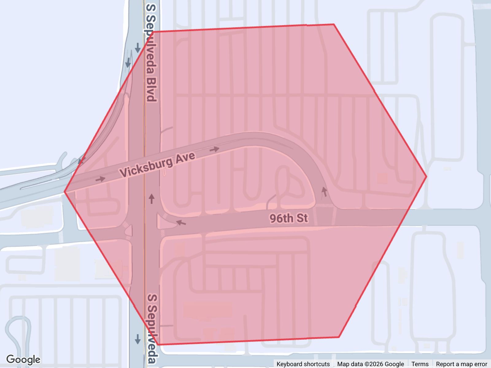
Single host home in Santa Monica, r ≈ 1 mi. Falls entirely in tier 1 (0–1 mi), so Option A emits just one zone covering the whole circle (green).
| Zone | res-9 | edge-aware (res 5–9) | full (res 5) | clipped-out |
|---|---|---|---|---|
| Tier 1 ≤1mi | 85 | 61 | 37 | — |
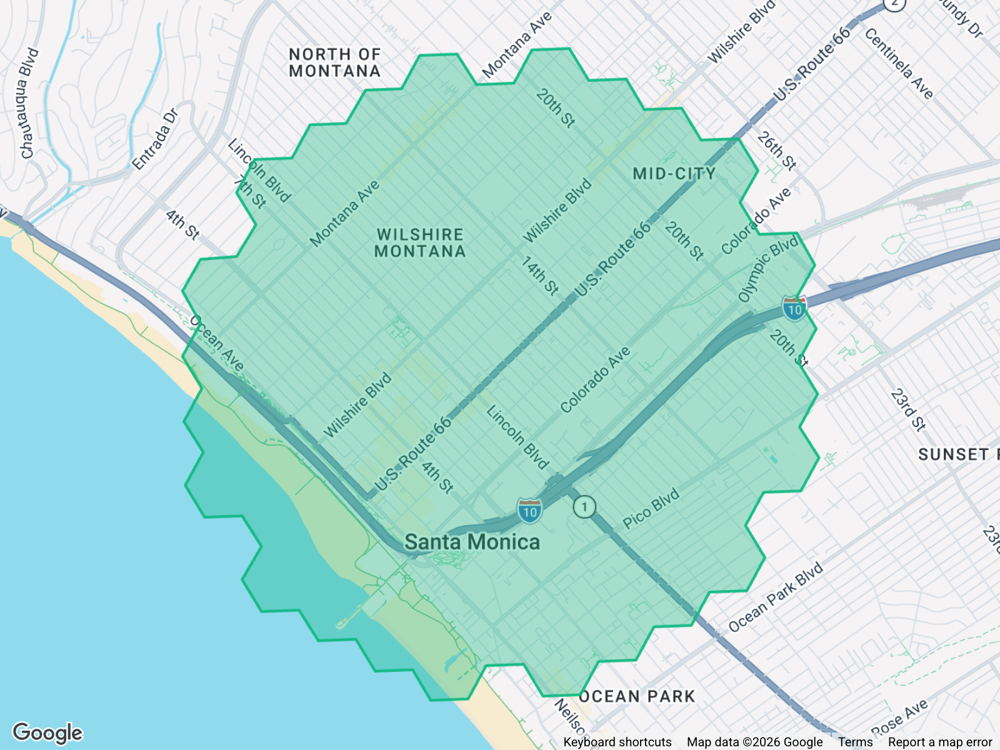
Same Santa Monica host, r ≈ 5 mi. Spans tiers 1 and 2, so Option A emits two concentric zones: the green ≤ 1 mi inner disk and the blue 1–5 mi ring. The migrator picks ring count purely from the legacy vehicle_custom_delivery_distance value against the finalized 1 / 5 / 20 mi tier boundaries.
| Zone | res-9 | edge-aware (res 5–9) | full (res 5) | clipped-out |
|---|---|---|---|---|
| Tier 1 ≤1mi | 85 | 61 | 37 | — |
| Tier 2 1–5mi | 1742 | 464 | 272 | — |
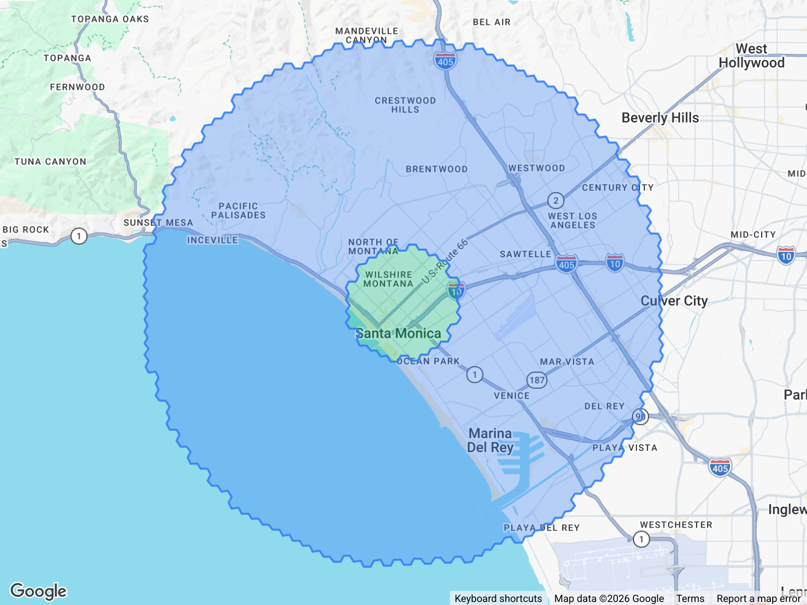
Same host and radius as N3 (r ≈ 5 mi) but generated under Option B: one single zone covering the entire 5 mi disk. Compare cell counts to N3 to see the storage trade-off — one bigger zone vs two tier-aligned zones covering the same area.
| Zone | res-9 | edge-aware (res 5–9) | full (res 5) | clipped-out |
|---|---|---|---|---|
| Single 5mi | 1827 | 363 | 213 | — |
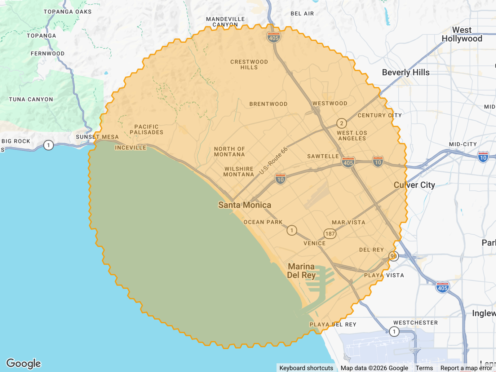
Pasadena host, r ≈ 20 mi — the finalized maximum. Spans all three tiers, so Option A emits three rings: green ≤ 1 mi, blue 1–5 mi, purple 5–20 mi. This is the worst case for cell count and a good stress-test for §6.2 (ring splitting) and §5.4 (country clipping).
| Zone | res-9 | edge-aware (res 5–9) | full (res 5) | clipped-out |
|---|---|---|---|---|
| Tier 1 ≤1mi | 85 | 43 | 43 | — |
| Tier 2 1–5mi | 1739 | 461 | 269 | — |
| Tier 3 5–20mi | 26301 | 2007 | 1173 | — |
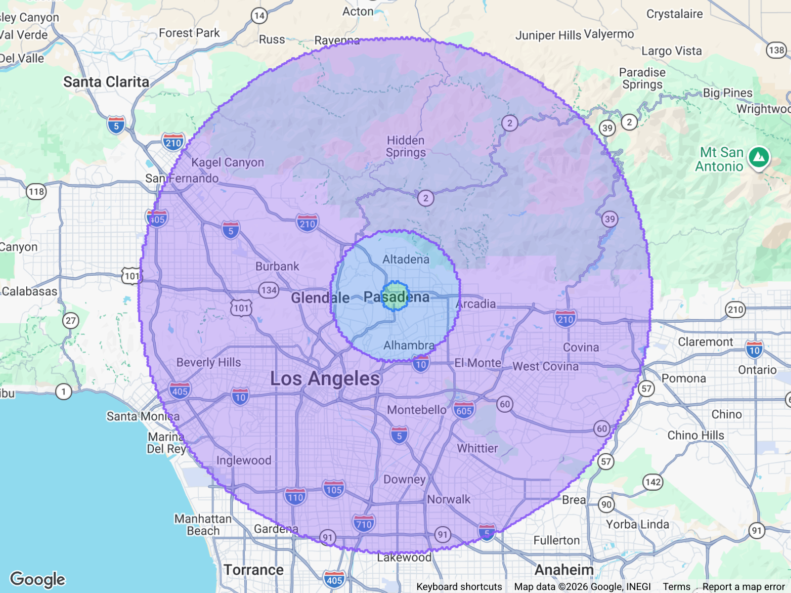
Same Pasadena host as N5, but Option B: one single 20 mi zone. Direct comparison to N5 — same area, different storage shape (one large zone vs three rings).
| Zone | res-9 | edge-aware (res 5–9) | full (res 5) | clipped-out |
|---|---|---|---|---|
| Single 20mi | 28125 | 1587 | 891 | — |
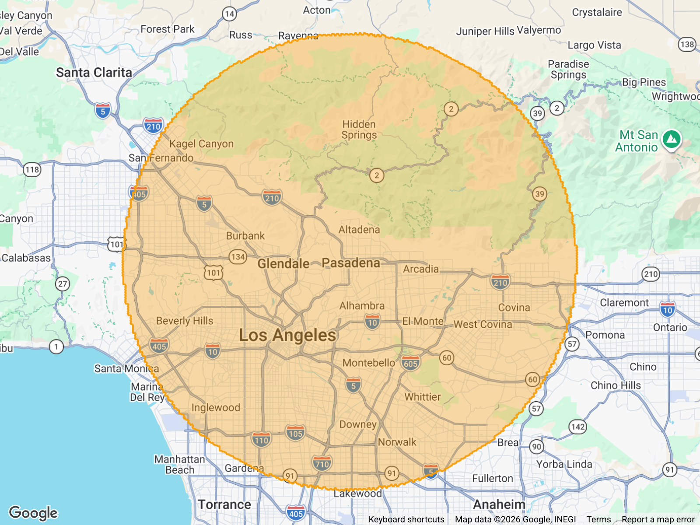
Santa Monica host, r ≈ 3 mi. Because 3 mi lands inside tier 2, Option A emits two rings: green ≤ 1 mi and blue 1–3 mi (the outer ring is clipped to the host's actual radius, not the full 5 mi tier boundary).
| Zone | res-9 | edge-aware (res 5–9) | full (res 5) | clipped-out |
|---|---|---|---|---|
| Tier 1 ≤1mi | 85 | 61 | 37 | — |
| Tier 2 1–3mi | 591 | 297 | 183 | — |
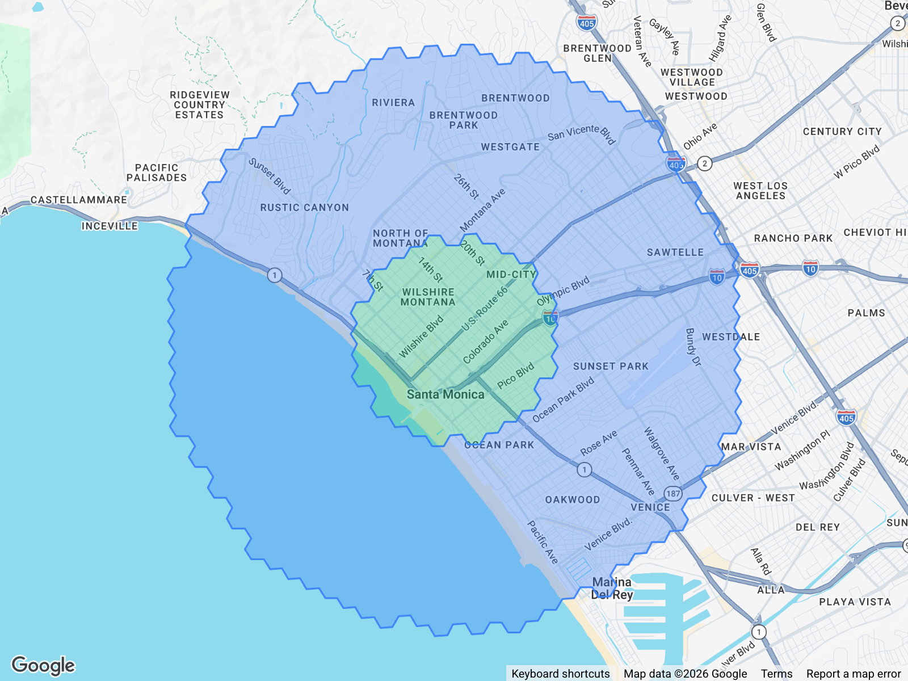
Same host and radius as N7 (r ≈ 3 mi) under Option B: one single 3 mi zone. Compare to N7 for the two-ring vs single-zone trade-off at a short radius.
| Zone | res-9 | edge-aware (res 5–9) | full (res 5) | clipped-out |
|---|---|---|---|---|
| Single 3mi | 676 | 202 | 136 | — |
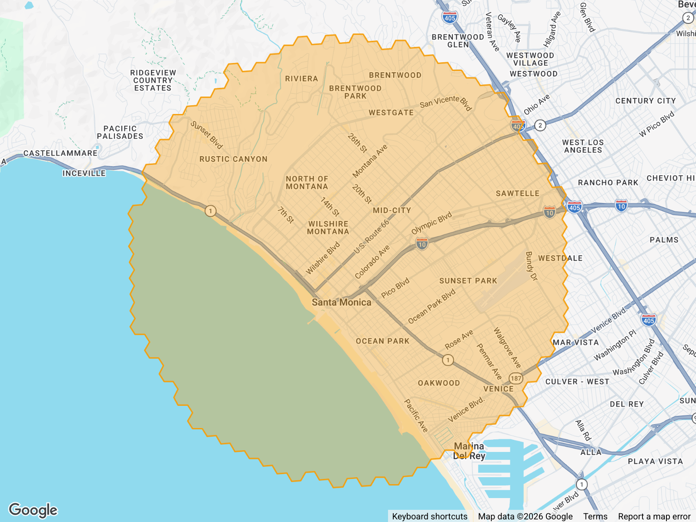
Pasadena host, r ≈ 10 mi. Spans all three tiers, so Option A emits three rings: green ≤ 1 mi, blue 1–5 mi, purple 5–10 mi (the outer ring clipped to 10 mi rather than the full 20 mi tier boundary).
| Zone | res-9 | edge-aware (res 5–9) | full (res 5) | clipped-out |
|---|---|---|---|---|
| Tier 1 ≤1mi | 85 | 43 | 43 | — |
| Tier 2 1–5mi | 1739 | 461 | 269 | — |
| Tier 3 5–10mi | 5282 | 1154 | 722 | — |
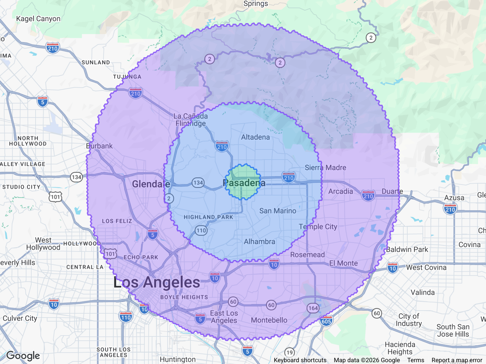
Same host and radius as N9 (r ≈ 10 mi) under Option B: one single 10 mi zone. Direct comparison to N9.
| Zone | res-9 | edge-aware (res 5–9) | full (res 5) | clipped-out |
|---|---|---|---|---|
| Single 10mi | 7106 | 764 | 458 | — |
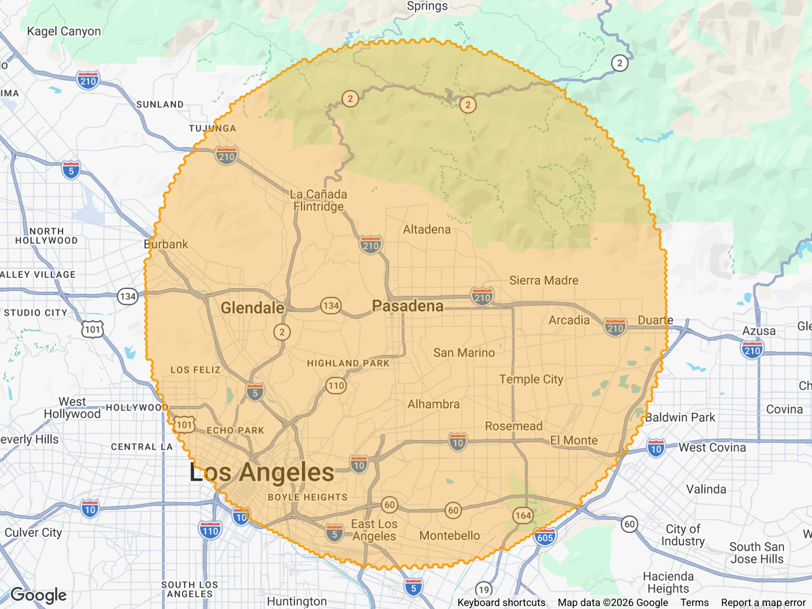
Small custom-delivery zone (~25 res-9 tiles, roughly a ½-mile disk in West Hollywood) chosen specifically so the carve-out is visible at this zoom. A hotel POI tile (red) sits near the center and is allocated first; with carveOutPriorZones=true the orange custom-delivery zone excludes that tile, producing a donut with the hole exactly one res-9 hexagon wide. This demonstrates the §6.2 contiguity rule: the resulting zone is still one polygon (donuts are allowed by validateHexConnectivity), so it migrates as a single zone. A carve-out that split the zone into multiple polygons would instead need to be migrated as multiple zones.
| Zone | res-9 | edge-aware (res 5–9) | full (res 5) | clipped-out |
|---|---|---|---|---|
| Hotel POI (carve-out) | 1 | 1 | 1 | — |
| Custom delivery zone | 36 | 36 | 24 | — |
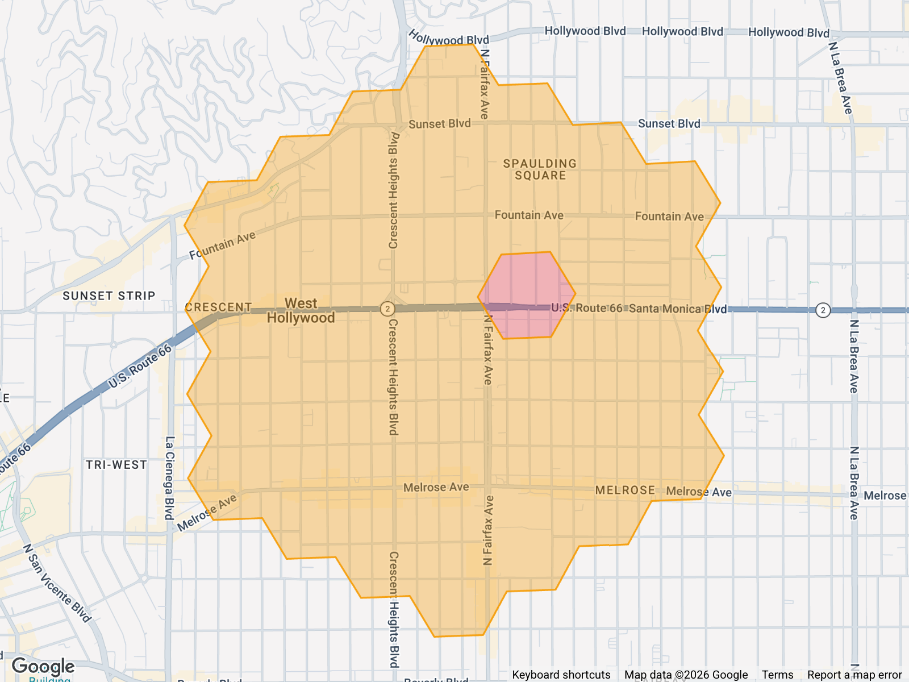
Two host homes ~5 mi apart (Santa Monica + Beverly Hills), each with a 2-ring (0–1, 1–3 mi) bullseye. Home1 is allocated first; home2's circles have any cells already taken by home1 carved out. This produces visibly asymmetric home2 zones — exactly the §6.3 scenario, and the reason we recommend ordering hosts by something deterministic (e.g. earliest custom-delivery creation date) rather than letting concurrency decide.
| Zone | res-9 | edge-aware (res 5–9) | full (res 5) | clipped-out |
|---|---|---|---|---|
| Home1 tier 1 ≤1mi | 85 | 61 | 37 | — |
| Home1 tier 2 1–3mi | 591 | 297 | 183 | — |
| Home2 tier 1 ≤1mi | 72 | 54 | 36 | — |
| Home2 tier 2 1–3mi | 410 | 224 | 140 | — |
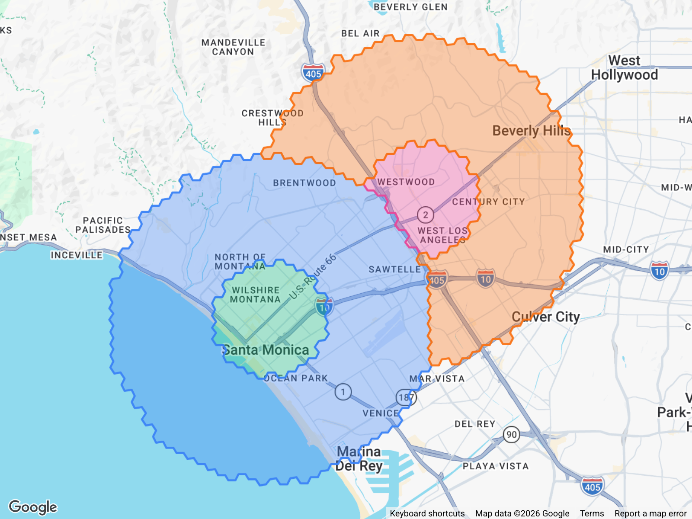
El Paso host, 20 mi Option A bullseye. Left: raw cells — note how the outer ring crosses the Rio Grande into Mexico. Right: after running each cell's center through the regional US polygon, all cells south of the border are dropped. The drop count appears under each ring as clipped-out. This is what §5.4's clipToCountry step would produce in the migration.
| Zone | res-9 | edge-aware (res 5–9) | full (res 5) | clipped-out |
|---|---|---|---|---|
| Tier 1 ≤1mi | 85 | 61 | 37 | — |
| Tier 2 1–5mi | 1653 | 453 | 267 | — |
| Tier 3 5–20mi | 24978 | 1938 | 1200 | — |
| Zone | res-9 | edge-aware (res 5–9) | full (res 5) | clipped-out |
|---|---|---|---|---|
| Tier 1 ≤1mi | 75 | 57 | 33 | 10 |
| Tier 2 1–5mi | 990 | 336 | 210 | 663 |
| Tier 3 5–20mi | 15286 | 1516 | 970 | 9692 |
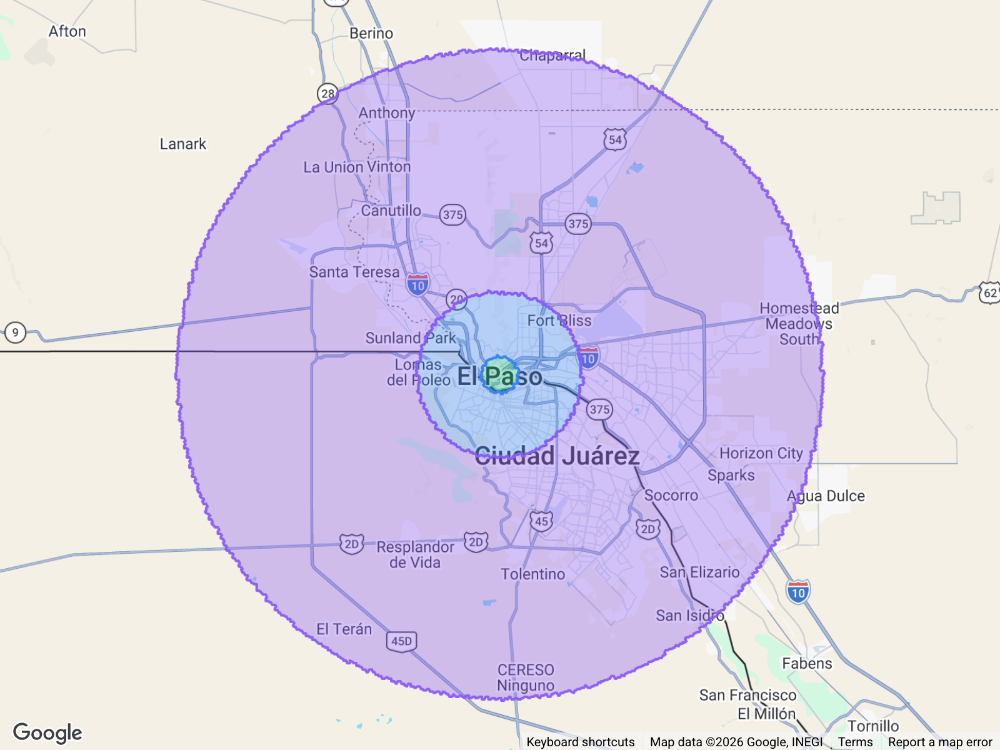
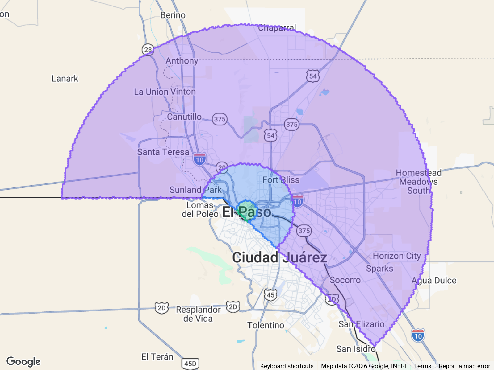